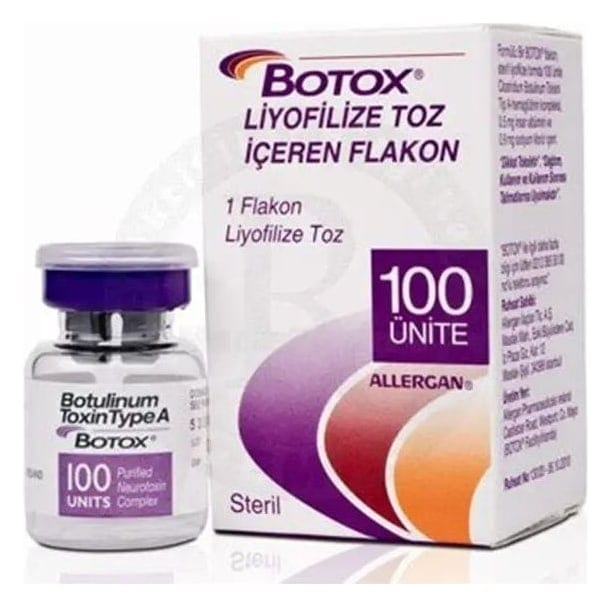

Botox 100 U. Enjeksiyonluk Çözelti İçin Liyofilize Toz, 1 Adet

Ne için kullanılır
KT · Bölüm 1BOTOX®, dondurularak kurutulmuş (liyofilize) beyaz toz formunda üretilmektedir. BOTOX®, şeffaf cam bir flakonun (ilaç şişesinin) dibinde gözle görülmesi zor olabilen ince, beyaz bir toz şeklinde sunulmaktadır. Enjeksiyondan önce ürün; steril, koruyucu içermeyen %0,9 sodyum klorür çözeltisi ile sulandırılmalıdır. BOTOX®, 100 Allergan ünitesi OnabotulinumtoksinA içerir. BOTOX®’un etkin maddesi olan OnabotulinumtoksinA, Clostridium botulinum adındaki bir mikroorganizmadan elde edilmektedir. Kas içine, mesane (idrar kesesi)duvarına ya da cilde enjekte edilen kas gevşetici bir maddedir. BOTOX®, enjekte edildiği kaslara gelen sinir uyarılarını kısmen engeller ve bu kaslardaki aşırı kasılmayı azaltarak, geçici ve geri dönüşümlü bir felç oluşturur. BOTOX®cilde enjekte edildiğinde, ter bezleri üzerinde etki göstererek, oluşan ter miktarını azaltır.
BOTOX®kronik migreni önlemede kullanılır. Fakat BOTOX®’un kronik migreni hangi yolla önlediği tam olarak bilinmemektedir. Mesane (idrar kesesi) duvarına enjekte edildiği zaman BOTOX®mesane kasını etkileyerek idrar kaçırmayı/sızmasını (üriner inkontinans) azaltır. Kullanım yerleri: 1)BOTOX®, doğrudan kasa enjekte edilebilir ve aşağıdaki bozuklukların kontrol altına alınması için kullanılır: 2 yaş ve üzerinde, serebral palsi hastalığı (beynin bir bölgesindeki hasar nedeniyle ortaya çıkan kas kontrol yetersizliği) olan çocuklarda dirsek, el bileği ve eldeki inatçı kas spazmları (kasılmalar). BOTOX®rehabilitasyon uygulamalarını desteklemek amacıyla kullanılır. 2 yaş ve üzerinde, serebral palsi hastalığı olan ve yürüyebilen çocuklarda ayak bileği ve ayaktaki inatçı kas spazmları (kasılmalar). BOTOX®rehabilitasyon uygulamalarını desteklemek amacıyla kullanılır. Erişkinlerde ve 12 yaşın üzerindeki çocuklarda: - İrade dışı göz kırpma (blefarospazm) - Göz kapakları ve yüzde inatçı kas spazmları (kasılmalar) - Şaşılık (strabismus) - Boyun ve omuzlardaki inatçı kas spazmları (kasılmalar) Erişkinlerde: - El, kol, omuz, ayak bileği veya ayaktaki inatçı kas spazmları (kasılmalar); - Başka lokal tedavilerin yetersiz kaldığı ve gündelik hayatı etkileyen aşırı koltuk altı terlemesi 2)BOTOX®ayrıca, kronik migreni olan erişkinlerde baş ağrılarının önlenmesi için kullanılmaktadır: Kronik migren sinir sistemini ilgilendiren bir hastalıktır. Kronik migren tanısının konulabilmesi için, her ay en az 15 gün ya da daha fazla baş ağrısı olmalı ve bu baş ağrıları, en azı 8 gün ya da daha fazla olmak üzere aşağıdaki özelliklerden en az ikisini taşımalıdır: - Başın sadece bir tarafını tutmalıdır - Ağrı zonklayıcı tipte olmalıdır - Ağrı orta derecede ve/veya şiddetli olmalıdır - Ağrı gündelik bedensel aktiviteler ile ağırlaşmalıdır Ayrıca aşağıdakilerden en az birisi ile birlikte olmalıdır: - Bulantı, kusma, ya da ikisi birden - Işık, koku ve ses hassasiyeti BOTOX®’un kronik migreni olan yetişkinlerde kullanılabilmesi için; 1) Bu alanda uzman bir nörolog tarafından tanı konulmalı 2) Tedavi nörolog gözetiminde uygulanmalıdır. BOTOX®, kronik migrenin yanı sıra önerilen dozun üzerinde aşırı ilaç kullanımına bağlı baş ağrısı olan hastalarda, en az iki ay süre ile koruyucu ilaç tedavisiz veya koruyucu ilaç tedavili döneme rağmen (aşırı ilaç kullanımının bırakılması ve tıbbi tedavi) baş ağrılarının geçmediği durumlarda baş ağrılarının önlenmesi için de kullanılmaktadır.
3)BOTOX®, erişkinlerde mesane (idrar kesesi) duvarına enjekte edildiğinde, idrar kaçırmayı (üriner inkontinans) azaltır ve aşağıdaki bozuklukların kontrol altına alınması için kullanılır: -Başka ilaçlar (antikolinerjik denilen) etki etmediğinde, idrar kaçırma, mesaneyi (idrar kesesi) aniden boşaltma gereği ve normalden daha fazla tuvalete gitme ihtiyacıyla seyreden aşırı aktif mesaneyi kontrol etmek için -Omurilik hasarına ya da multipl skleroza (beyin ve omuriliği tutan otoimmün bir hastalık) bağlı mesane (idrar kesesi) sorunları kaynaklı idrar kaçırma 4)BOTOX®erişkinlerde, aşağıdakiler hastanın psikolojisini önemli oranda etkiliyorsa, bu görünümlerin geçici olarak tedavisinde endikedir: -Kaşlar maksimum derecede çatık iken, kaşlar arasındaki dikey çizgiler (glabellar çizgiler) ve/veya, -Maksimum gülümsemede gözlerin kenarında görülen yelpaze şeklinde çizgiler (kaz ayağı çizgileri) ve/veya, -Maksimum kaş kaldırma sırasında görülen alın çizgileri, -Çene ile boynu birbirine bağlayan ve maksimum kasılma sırasında görülen vertikal bantlar.